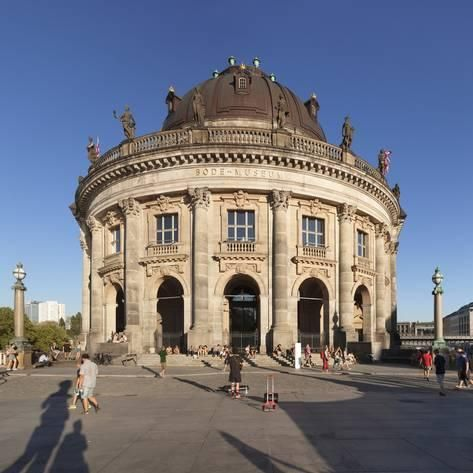

Machakos
Machakos is a town in eastern Kenya. It is the capital and largest urban center of Machakos County.
Explore MachakosAbout Machakos
Machakos is a town in eastern Kenya, located 63 km southeast of Nairobi. It is the capital and largest urban center of Machakos County. The town has a population of approximately 150,000 people. It is known for its vibrant market and friendly locals.
Things to Do in Machakos
Machakos Peoples Park
Machakos Peoples Park is a large park located in the of Machakos. It is a great place for picnics, hiking, and bird watching.
Machakos Museum
Machakos Museum is a museum located in the center of Machakos. It showcases the history and culture of the area.
Explore Machakos
Machakos is known for its vibrant market and friendly locals. It is a great place to experience the culture of Kenya and meet new people.
Some popular activities in Machakos include hiking, bird watching, and visiting the local museum and market.
Whether you're looking for a relaxing vacation or an adventurous getaway, Machakos has something for everyone.
Contact Us
+254 798237947